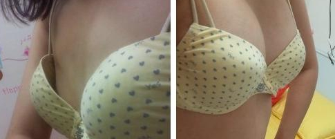
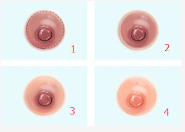
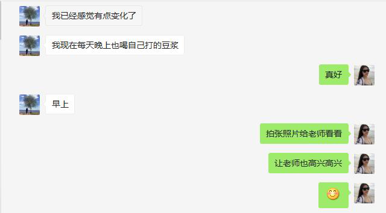
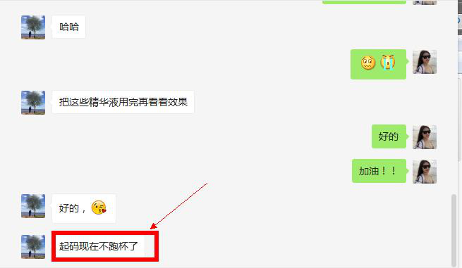
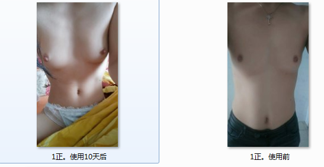

聊天时候在结尾多带表情！让整个聊天和人物形象更加生动
问候之前，利用手机打开客的朋友圈，快速判断并分析下客各方面的情况：
1、客是学生还是已婚妇女？（有利于判断客的性格及初步情况）
2、若是学生有没有男朋友？（有利于通过异性去刺击客户）
3、家庭经济状态？生活消费水平？有没有车？（有利于最终抛方案金额高低的处理）
1、如果忙不开，又不断有客户主动咨询的，可以发送这段文字适当的筛选，也推崇了老师身份：如果客户的回答很真诚，视为优质顾客，最先去沟通。
男性：
你好！请问你这边是想彻底改善、增大呢？还只是单纯性咨询了解的呢？如果是想彻底改善，请将你这边的初步情况（年龄、身高、体重、罩杯）和老师说下。如果只是单纯咨询了解，那么要等老师一会忙完再回复你，好吗？因为现在有4-5个老姐妹介绍姐妹在做改善，有些小忙，希望理解下！（笑）
2、老师中途有事，不方便及时回话
：**，不好意思，现在这边有两个是以前的老姐妹丰胸成功后介绍过来的，昨天约好在今天这个时间点的，所以，你这边稍等一下，或者我们改约一个时间好吗？你晚一点什么时候方便呢？
想改约到第二天： 不好意思，现在这边有两个是以前的老姐妹丰胸成功后介绍过来的，昨天约好在今天这个时间点的，所以，你这边谅解一下，我们改约到明天的时间，好吗？
客户上来就问产品是什么丰胸方法？什么东西？： 产品采用的是高分子渗透技术和导入式自然丰胸的科学原理，是外用产品，安全无副作用。所有成分都是通过国家质检局检测合格的。而且，在你之前就已经有着我自身以及那么多的姐妹在验证成功了的。 [再引导针对性]
结尾总结： 这个情况，必须经通过这么一个过程来做改善，第一步，疏通乳腺导管，第二步，补充营养，第三步，锁住营养，三个步骤，缺一不可的。
老师：你好！我是丰胸导师李小璐，你是哪位姐妹介绍过来的朋友呢？怎么称呼你呢？(微笑的表情）
客户：微博上
老师：老师应该怎么称呼你呢？
客户：刘美婷
老师：我就叫你美婷，你可以叫我李老师，也可以叫我小璐
是想改善胸部问题吗？（先天性发育偏小还是产后缩水、萎缩和大小不一、外扩、下垂）？
客户：好的
老师：美婷，由于每个姐妹的情况不同，同时，也是为了更好的帮到你，方便说下你的身高、年龄、体重以及目前的罩杯情况吗？
客户：20岁，160CM，100斤，A杯（不知道多大）
老师：（客搞不清自己的就发“罩杯”的图片）
你对比下，自己罩杯大小更像哪个？
客户：第一个，A
老师： A杯是满杯吗？
客户：是的 // 不是

你和丹丹没有改善相比，会不会比丹丹要小呢？
那你想的胸部基础比丹丹的要好，丹丹能改善和增大，那么你也一定可以的哦，
老师：好的 // 那就是小A哦！
客户： B杯
老师： B杯是厚杯还是薄杯？
客户：是厚的
老师：那如果穿薄的还能满杯吗？
客户：不能
老师：那就不是B杯，介于A-B杯之间，也就是大A。
客户：哦哦！
老师：（21岁以下问：那现在是还在上学吗？（21岁以上问：结婚生小孩了吗？
客户：在上学（结婚了）
老师：。那你在结婚前胸部也不是很太哦！！
老师： **，按照东方女性标准体形来说，你的身高、体重还是不错的，证明你在青春期营养是跟上了，但是你的胸部发育却只有A杯，这说明你在青春期乳房的营养是没有提供到位的，所以才没发育完善。有两种可能性：一是你的乳腺导管过小或阻塞了，营养不能正常输送到乳房。二是雌激素分泌不足，造成胸部发育偏小。
客户：我也不是很清楚。
老师：要知道，每个人的胸部情况都是不一样的，我们必须要先清楚明白胸部偏小或松驰下垂真正的原因是什么，再来针对性一对一的解决。在微微/小璐老师这里，必须通过专业的方式，了解分析清楚以后，再来针对性制定方案达到彻底的改变。所以，老师现在需要进一步了解你其它的情况，现在方便的吗？
老师： **，以前有没有过丰胸的经历呢？
客户：没有//有
老师：哦，好的。//（有：既然有过丰胸的经验，那你知不知道自己是什么原因导致的胸部偏小或松驰下垂呢？）
客户：不知道//知道
老师：那你这不是很盲目的使用产品吗？！这样肯定不行的。要知道市面上的产品琳琅满目的，而且大众化的产品是任何人都可以使用的，可并不是每个人的情况都一样啊。//（知道：那你胸部偏小或松驰下垂是什么原因导致的呢？！+微笑）
客户：就是天生的
老师：即使是天生的，也有很多方面的原因，具体的你不是很清楚，对吧？！
客户：是的
老师：好的，没有关系，我们继续了解，分析出来原因就容易解决了。不要着急！
客户：好的
老师：那你有没有外扩、大小不一、或者下垂的现象？你目前的胸部自己用手抓或爱人用手去抓，都是散的，不集中，没手感。
客户：有点 // 这些方面还好。
老师：（问仔细）是哪个有点？明显吗？
老师：今天上午那个姐妹，她说自己穿上加厚的内衣还有点自信，（后天的加上因为胸部产后萎缩、松弛，下垂）一旦脱掉内衣平躺就什么都没有了，一马平川的，V字领的衣服是可望不可及的。她老公比较胖，总爱玩笑说，摸她的胸部还不如摸自己的胸部，她都快急死了。所以，类似于你们这种迫切的心情我也是特别理解的。（拥抱）考虑客户的感受，立马往下了解情况：老师：为了更好的了解你胸部偏小的真正原因，李老师再问你一些问题。你观察过胸部乳晕和乳头的颜色吗？如果没有，那你现在方便看下吗？（客户分不清颜色的时候，给颜色参考：黑红色？棕色？还是咖啡色？）

了解这方面的原因，是需要通过胸部外在的表现来分析了解内在的情况。
客户：粉红的（黑红的）
老师：再看看乳晕的地方有没有颗粒物？
客户：有（没有）
老师：**那你一直以来，每次来月经的时候胸部有没有涨痛不舒服的症状呢？
客户：有（没有）
好的，老师大概知道你胸部偏小的原因是什么了，为了再次确定，老师现在就针对你胸部的情况，再针对性的帮你分析一下，稍等一下哦
老师：哦！明白了！（客户追问为什么？不需过多解释，有涨痛的：痛则不通，通则不痛）
老师：结论：你的胸部偏小了，你的乳腺导管都是堵塞的，胸部都吸收不了营养，怎么能长大呢？！你这是非常典型的先天性不完善，可是你现在已经不再是青春发育期，就必须要通过疏通乳腺导管，再来补充营养，达到二次发育来增大。
亲爱的，老师和你说这些也是希望你自己能多注重一下的，因为你现在是乳腺导管的堵塞导致的胸部偏小的，现在也不是胸部大小的问题的了，也是自身的健康问题的，因为乳腺导管的长期堵塞是会导致一些乳腺疾病的，这是一种健康隐患的。
你这种情况也是很常见的，增大罩杯是完全不成问题，因为在你之前，已经有过很多成功的姐妹了。
客户：那怎么办？
老师：（大小不一： **，老师现在告诉你，你的大小不一，也是你乳腺导管不畅的表现之一。这种情况多半由于睡姿不当或哺乳不均，长期偏向一侧，长期的压迫到乳腺导管，以及胸部的微循环不畅，营养不能正常输送而引起的大小不一。
这同时也是一种健康隐患，因为乳腺导管长期的堵塞，后期很容易引发乳腺增生、小叶增生的一些乳腺疾病，严重的就是乳腺纤维瘤。当然现在还不是病。所以，你自身要引起重视。）
这些都是这边个别姐妹发生的情况，所以都是要避免发生合重视！！
客户：老师，那要怎么办？
老师：（发送“乳腺问题”的截图）
老师：你胸部偏小/扁平的问题已经找到，唯一的方法，只有先解决根源性的问题。先疏通你的乳腺导管，听说过乳腺导管吗？
客户：没有
老师：我们女性的胸部有15-20根乳腺导管，又称为输乳管，乳腺导管是往胸部输送营养的通道。你说如果通道都堵塞不通畅了，你每天提供再多的营养，胸部能不能吸收呢？就像吹气球一样，气球进气体的通道都没有找到或者是堵塞的，气吹不进去，那气球能吹大吗？对吧！
所以你现在这种情况得通过一对一的方式，制定疏导方案，疏通乳腺导管补充营养后，不仅可以改善你胸部罩杯大小的问题，让胸部吸收营养后变得充盈、坚挺。甚至还杜绝了胸部健康方面的隐患。



君君就是和你同一情况的，几乎和男的一样了，她以前用过些丰胸产品，都没有信心了。当时通过朋友介绍找到我的时候还半信半疑的。后来了解她的情况之后针对性的给她制定方案，你看她现在才多少天，10天左右的时间，效果已经很明显了。
亲爱的，我这边的姐妹有些说，那我就试试吧，我说那如果只是试试，拿自己当小白老鼠，我说那就不要去浪费自己的时间和精力了。女人的胸部只有这么一对，要么就不要去改善，要改善就必须要针对性。你说是不是呢？
嗯呢，你的担心老师能理解的呢，效果不是老师说出来的，也不是你担心出来的，为什么老师要花时间去了解你的情况而不是直接让你去用产品，就是希望能一步到位的确保能帮你彻底改善好！只要你反映的情况是真实的，在使用的过程只能按照老师教的去做，效果不用我说我们一起见证！
当然可以的呢，只是你自己愿不愿来配合老师改善，给自己一次成功蜕变的机会
每天通过按摩手法，配合使用高分子“精华油”渗透技术，疏通乳腺导管。输送导入营养的高峰期配合“精华液”。最后但必须要配合“美乳霜”提升胸部的弹性，变得有手感坚挺饱满，锁住营养不再流失，完全杜绝反弹回缩的现象。前15天现阶段就会有变化。后15天胸部已经有了明显的变化，明显长大2-4CM，达到增大一个罩杯的效果。
第一步，疏通乳腺导管，第二步，补充营养，第三步，锁住营养，三个步骤，缺一不可的
现在夏季来使用就可以美美的穿上各种漂亮的衣服了，到时候不管怎么穿那都是有自信和有气质的
孕妇和过敏体质都是可以使用的，所以安全性方面是完全不用担心的，也是没有什么特别注意和禁忌的，毕竟这是健康的丰胸，月经期间也是可以照常使用的，食物方面也没有任何禁忌
注意在改善期内，不要过急购买内衣，以免买回来不到一周又要更换大尺码，造成浪费。
所有成分都是通过国家质检局检测合格的。而且，在你之前就已经有着我自身以及那么多的姐妹在验证了的，所以，你不需担心效果的问题。当你在后期配合过程中，你的胸部一天天在变化了，不穿内衣也能看到乳沟、躺下也能看到坚挺、饱满的效果，你自己都会爱不释手。
用法：每天10分钟呢，我会监督你使用的哦，每次用量我这里都会存档的，所以你不需要担心怕坚持不住，我这里很多空姐上夜班还有姐妹时间不规律，我都会让她们用量多一些，2到3天一次都是可以的呢，而且每天就10分钟的时间。
根据我刚才了解你的情况，之前很多与你情况相似的姐妹，通过两个周期的时间已经达到C杯。产品采用的是高分子渗透技术和导入式自然丰胸的科学原理，直接作用到胸部。
精华油：疏通乳腺导管，让胸部可以补充进去胸部营养
精华液：补充胸部营养，增大胸部罩杯，让胸部更加的紧致，坚挺饱满
美乳霜：滋润胸部肌肤，增大胸部肌肤营养
注意在改善期内，不要过急购买内衣，以免买回来不到一周又要更换大尺码，造成浪费。
主要成分有益母草，益母草嫩茎含有蛋白质，碳水化合物等多种营养成分，益母草可以疏通散结，祛瘀新生，活血调经的妇科良药，缓解女性经期胸部胀痛。
刺激胸部腺细胞的分裂繁殖，激活腺小叶腺泡，增强腺泡的转换功能，利用营养转化脂肪，促进胸部的再次发育，改善胸部衰老及堵塞胀痛的状态。
老师： **，针对性方案都能够理解吗？有没有什么地方不明白的呢？
客户：是什么样的东西，多少钱？
（马上发送“改善前后的图片”）针对性来解决，很快你也就可以和她们一样自信迷人。而且，改善好的不仅仅是你胸部的曲线美，同时也可以彻底的杜绝乳腺方面的健康隐患，因为你乳腺导管彻底疏通了啊！（微笑）
我就不一一发给你了，因为太多太多，不好找。她们今天的变化是她们之前选择和坚持下来的结果。
客嫌贵+担心效果+和老公商量
小璐老师给你搭配的就是这三种产品，来配合使用
第一步，使用胸部精华油疏通胸部
第二步，使用胸部精华液给胸部补充营养
第三步，使用美乳霜补充营养的同时，并锁住营养
现在全球丰胸的方法就只有三种，第一，手术注入，第二，外用导入，第三，内服调理，我这里采用的就是最安全，最健康的丰胸的方法
我是广州中医药大学毕业的，毕业之后就去韩国进修人体生物学，并参与研发了多种丰胸方法！在这期间自己也完成了从A到D杯的改变。保持到现在也有差不多3年的时间！ 我的教授和韩国团队正在研发这套针对性的产品，教授也是看我成天丰胸丰胸不见效，说我太盲目了，当时通过这款产品得到改善也是当时我们学校的教授引荐的，当时还处在韩国团队研发期间。 我一直都是在跟姐妹们说的是，要想真正的做到丰胸成功是必须要做到几点的，1情况针对性，2方案针对性，3产品成分针对性，三者是缺一不可的。 局部把向去解决胸部问题，不参与人体代谢，对身体也不会造成任何副作用，有效成分渗透到胸部里面丹丹跟你的情况是差不多的，不过她的情况比你严重，丹丹刚找到小璐老师的时候都说自己的胸部就跟男人的一样，几乎都是平的，自己也不相信能增大了，但是后面经过针对性的方案改善，现在也同样的改善的多么的漂亮了啊，对吧
用法的话你收到货我会一一指导你去使用，因为你没有收到货，所以这里也说不明白，你看到了，我会每天指导你使用10分钟，必须经通过这么一个过程来做改善，第一步，疏通乳腺导管，第二步，补充营养，第三步，锁住营养，三个步骤，缺一不可的。
过滤：老师的产品在1千多左右，能接受吗？效果是保证的，我是自身体验的？要进一步了解吗？
亲爱的，别着急，这边简单了解下你乳房的情况，后面我会介绍我自身使用的丰胸产品之后给你制定方案，你在做决定。
你找我也是时候，因为我们4年价格也是一直没有变动，现在货源也是比较紧缺，后期我们价格会调升了。不会让你觉得冤枉钱，后期改善都是值得呢
老师一天帮助几十人丰胸，至于你的疑问至于你的担心也是因为市面的不同产品太多了，导致你有对我没有信心，我自身也走过很多弯路，但我丰胸成功3年，哺乳半年，也是从A杯做到D杯的，我儿子小宇也非常健康。
内服的是通过肠道吸收再提供给身体各个部位的，在供给胸部软组织的同时，也供给身体的五脏六腑，影响到的不仅仅是胸部的健康，更多的是五脏六腑的健康。所以，面对口服的产品，老师从不建议大家去使用。
在小璐这里是没有试用装的噢，试用装是针对那种刚起步，没有效果保证的产品，而在小璐姐这里一直做的是口碑和信誉，是没有试用装噢～
你也有**的身高，做到**杯是非常符合你的。我们效果是都是姐妹们反馈出来真真实实的存在的，很多车展的美眉和模特都是找老师丰胸的。老师也是自身从A杯做到D杯，我肯定是有这个实力跟能力的，时间会证明效果的！实践也才是检验真理的唯一的标准
去年夏天有个浙江杭州的姐妹小林，她的比你的还小，那个时候她朋友都说她胸部就只剩下两个乳头了，她当时听了这句话感觉很受打击，后来就通过朋友找到了老师，老师也就用了两个月的时间帮助她做到了C杯！后来她还特意寄了一些家乡的特产过来给老师！
我会监督你使用的哦，每次用量我这里都会存档的，所以你不需要担心怕坚持不住，我这里很多空姐上夜班还有姐妹时间不规律，我都会让她们用量多一些，2到3天一次都是可以的
我之前碰到很多姐妹，都是病急乱投医，今天试这个，明天试那个，到最后都是花了钱没有看到效果，自己都几乎没有信心了。但是，身为女性，又特别希望自己的胸部大起来，毕竟追求美和爱美是女性的天性。所以，我所面对的姐妹们，我都会和她们真诚的聊，必须要针对性，市面上的产品琳琅满目，国产的，进口的大把，但并不能贵的就是好的，只有适合自己的，才是好的
产品的功效原理是，在使用期间已经激活了以前的堵塞，干瘪，未发育成功的乳腺细胞，同时也促进了新陈代谢，原理等同乳房的二次自然发育，丰胸成功后就不会反弹了。整个丰胸过程与女性青春期发育一样自然有效， 真正自己长大的！
Paypal：xy5223765@sina.com助理肖尧
毕竟我们都是女人，尤其是生过宝宝的的妈妈，到了一定年龄段，已经不再年轻、身材走样、脸上皮肤也出现了变化，这个时候的胸部也是一样不再让老公满意，自身的价值逐渐下降。所以，这些感受我都是可以理解的。所以，做为女人的我们，必须要对自己好点，增强自身的价值，有了价值，那什么都不缺了
针对性16/7岁-----40岁之前的客户说要考虑根据情况下危机：胸部只有是越早的改善，改善起来效果是最佳的，因为你要知道我们女性随着时间一天天的不断往后推移，年龄一年比一年的增长，体内的激素水平也是会逐渐不不断下降的，那到时候再多改善效果就没有你现在这个年龄好改善了的
外加你是生过BB的胸部，你想过没有，你的胸部由于乳腺导管是堵塞的，那你的胸部里面的营养一直的在流失，外面的营养又补充不进去，那久而久之的胸部最终就是剩下一层皮，特别的干瘪的
加了不回：亲爱的，添加了老师，老师给你发消息，你都没有回复老师也不知道怎么去帮助到你，别的姐妹加进来都是挺着急想改善的，如果你需要改善的话，这边就回复一下~ 胸部也是我们女生的第2张脸来的，改善起来就是一辈子的美丽，整个人也会更加自信起来的，我会用我的多年精力改善好你的，也是希望你改善好了介绍更多姐妹我啦。
亲爱的，隆胸效果是最明显的，但是同时也是最危险的，在小璐这里也有些姐妹是隆胸后来找老师的。刚开始是效果非常明显，那么过了四年之后，胸部里面的假体和化学物质就开始腐烂了，到最后不得不取出假体。
教用法： 先用精华6天时间 一天一支，根据自身的工作时间安排，它是疏通的一个作用，观察胸部变化调整用法：后再用精华和美乳霜，让胸部一边疏通的同时一边补充胸部的营养，让胸部吸收增大。增大之后用胸膜巩固定形胸部，让胸部不再反弹，达到一个理想的罩杯。
这是我以前上大学的时候，胸部只有A杯，经常被我闺蜜开玩笑
亲爱的，你担心的问题，所有的姐妹都担心过，包括我自己，但是经过我自己的增大，姐妹们相信我，在我这里做改善，她们增大了之后，半年，一年，两年，一传十，十传百，现在小璐姐这里，每天添加的姐妹百分之八十以上，都是以前增大的姐妹介绍的。自己看到效果了，才介绍自己身边的亲朋好友过来。
产品经过过国家质监局检测的，外用的产品，涂抹式的，在你之前已经有我和众多姐妹使用改善成功的，产品是必须安全，无副作用的，你放心。使用的方法都是非常简单的，并且后续你收到产品之后，老师这边会一对一全程指导你使用，全程陪 你变成性感女神
我是广州中医药大学毕业的，毕业之后就去韩国进修人体生物学，并参与研发了多种丰胸方法！在这期间自己也完成了从A到D杯的改变。保持到现在也有差不多3年的时间！
不客气的呢，毕竟你也是咨询过小璐姐的，我也是会对每个姐妹负责的，有什么关于对你比较适合的，我都会发给你的，希望能够对你有所帮助
说实在的，与其担心那么多，还不如给自己一个尝试的机会。一个产品我说得再好，你没去用它永远不会知道效果，你胸部也不会突然大起来是吧。
而且我们那么多客户，包括很多四五十岁、情况也比较复杂的大姐，都有效果了。。 更何况您还年轻、情况也不是很复杂。效果肯定不错。
我们产品是植物提取出来的，没有激素成分的。您放心使用，我们客户也不少了。 少说也有十几万了。 真的还没有哪个客户说有不良反应的。
我们主要做的是效果，不是一锤子买卖。如果我要骗你，我可以立马答应给你无效退款，但是没意思的，你要的是效果，而不是口说无凭对吧。
老师这边产品是纯植物萃取的，安全无副作用。产品采用的是高分子渗透技术和导入式自然丰胸的科学原理，是外用产品，安全无副作用。所有成分都是通过国家质检局检测合格的。而且，在你之前就已经有着我自身以及那么多的姐妹在验证成功了的。 也是没有什么特别注意和禁忌的，毕竟这是健康的丰胸，月经期间也是可以照常使用的，食物方面也没有任何禁忌
姐姐你也知道胸部的价值，可能你今天需要花钱的时候觉得价位有点高，但是当你胸部在逐渐饱满的时候，当你自己或者爱人摸你的胸部手感更加好的时候，当你爱人更加迷恋你和胸部的时候，当你自己因为胸部而更加自信，更加有魅力的时候，你就知道一切都值得了，而且改善都是一辈子的，一辈子花这么一次钱而已
计算了一下，改善的费用是5280，这次 给姐姐你优惠280，虽然不多，但是希望姐姐你可以用这优惠的280可以买套性感内衣，到时候也呈现最完美的，最性感的自己
客户：哺乳期的时候我感觉胸部蛮大的，断奶后就缩的厉害呢？
小璐：亲爱的，女性在哺乳期的时候因为雌激素、孕激素共同的的刺激下，乳腺导管和乳腺泡会发胀，所以我们会觉得胸部变大了。断奶后，乳腺腺体慢慢处于死寂，腺体萎缩，腺泡消失，结缔组织重新取代脂肪组织，加上断奶后回流不彻底，乳腺导管堵塞，导致乳腺细胞衰老，营养补充不进去，胸部就会缺乏脂肪支持，怎么会不下垂、萎缩呢！
你的情况我也是了解清楚了，帮不到你的话，我也早就会跟你说，我也不会浪费这么多时间和精力去和你说这些，你后期我也会一一指导你使用，也是需要花时间和精力的，我也不会做一些没用的事情，唯一的就是给到你效果
今天和红梅你说这么多，我只是希望你能把我最佳的丰胸时间，不要一拖再拖。其实我们今天的关系就是，你刚好需要，我刚好专业，仅此而已。但是经过和红梅你了解情况，你的情况只有我能够来帮你，所以我今天腾出了很多时间来与你沟通。我也知道你并不是朋友介绍的，可能会对我不信任，那我李小璐也是做好自己就可以了，我做了自己应该做的就可以了，剩下的就红梅你自己决定了。
之前也和红梅你说过的，我李小璐并不是你常见的微商，卖产品的人，我李小璐只是自己增大之后通过微信的方式来帮助大家而已，因为我自己也是从胸小过来的，所以我愿意帮助胸小的姐妹们逃离胸小的苦海。可能你会说，那还不是靠这个赚钱，那我可以直接和你说，这改善的费用，我赚的最多十分之一，而改善过程中我都需要花时间和精力来帮大家。其实我家里也不差钱，有的姐妹就会问，为什么你都不差钱，还要那么累的来帮助大家呢，因为这个是一个信念，因为我知道胸小的痛，并且我体会过很多很多胸小的痛，所以我愿意帮助大家 。每个姐妹赚钱都不容易，所以给大家大多数都是成本费用，原材料费用，我也是让大家花钱都是花的值得，花最少的钱得到最好的效果。我是广东潮汕人，我家也是信佛的，人在做，天在看
我改善到现在也三年的时间了，期间喂了8个月的母乳了，现在胸部一样保持的很好，所以改善好了效果也都是一直保持的哈，大概15-20天左右就会有效果了的，到时候你自身也会明显的感觉到的
你现在做好疏通增大，对你后期生二胎是很好的，因为乳腺不疏通，以后你小宝宝喂母乳，母乳就会含有毒素垃圾，给到孩子的就是毒素，导致孩子免疫力低下的
刺激胸部腺细胞的分裂繁殖，激活腺小叶腺泡，增强腺泡的转换功能，利用营养转化脂肪，促进胸部的再次发育，改善胸部衰老及堵塞胀痛的状态
主要成分有益母草，益母草嫩茎含有蛋白质，碳水化合物等多种营养成分，益母草可以疏通散结，祛瘀新生，活血调经的妇科良药，缓解女性经期胸部胀痛。
乳头乳晕颜色偏深，有颗粒物是因为乳腺导管堵塞，导管内的垃圾排不出去，长期循环不畅，在胸部表面现象出来，所以乳头乳晕颜偏深，胸部表面的任何问题都是胸部内部组织出现了问题，就像我们肠道出现了问题皮肤就会出现暗沉或痘痘一样的道理
亲，一个好的产品，不是靠百度上的评论，论坛贴吧上是任何人都可以上去些的，做的好同样避免不了同行的诋毁
从月经来的第11、12、13天，这三天为丰胸最佳时期，第18--24天这七天为次佳的时期，因为这10天当中影响胸部丰满的卵巢动情激素是24小时等量分泌的，这也正是激发乳房脂肪囤积增厚的最佳时机。
小璐的产品是帮助疏通乳腺导管下健康的增大胸部的，疏通，排除残奶，补充营养，收缩乳晕，淡化颜色，变紧实坚挺增大的，残留的奶水一直在胸部里面堆积，会变质，就会影响胸部的健康。
胸部哺乳后，如果没有去做专业的排残奶，胸部里面是残有奶水的，奶水长期残留在胸部里，会发生变质，导致胸部不健康，比如乳腺疾病这些，也是可以更好帮助排出胸部的垃圾毒素和残奶的
产品是一样会的，只是换了一个牌子，很多姐妹反应有胸部贴膜很麻烦，套多步骤了，所以产品也升级了，成分也是有新添加，添加了香叶天竺葵，调节肌肤的分泌，让皮肤保持油脂平衡，使胸部更加紧致饱满，效果也是会更好的
我是广州中医大学毕业的，毕业之后去韩国进修的人体生物学和胸部脂肪细胞学。我也是了解清楚你的情况我才得知你这个情况是乳腺导管堵塞导致的胸部偏小，只要你与我回馈的信息都是属实的，那么我都是有十足把握能够帮到你的，不可能存在没效果的说法，知道吗？
你保障你自己的权益了，那谁来保障我自己的权益，我肯定也有信心去帮助你改善，毕竟我专业做丰胸这么多年了，我肯定也是有这个实力的，万一说一句不好听的，我帮你把胸部改善好了，你跑掉了，我去哪里找你？
信任是相互的，如果你不相信我，我也没必要去帮助你改善的，你也不是我这里第一个，也不会是最后一个的，老师说直接点，你也不要介意，我也不差你这几千，我买不了车，也买不了房
亲爱的，小璐不是银行机构，没有能力支配分期付款这种购物方式的，如果亲你现在手头紧的话，可以在支付宝试试借呗，或者亲爱的你有没有信用卡或是找朋友先周转一下呢？
亲爱的，丰胸和治病是同一个道理的，需要了解情况胸部情况，外在和内在，不然小璐了解你那么多情况做什么呢？
在我这里改善的姐妹有的是警察，有的还是妇科医院的医生，微整形医院的医生，空姐，模特都是有在我这里改善
如果你每一次都是这样的去纠结，去犹豫。那如果你不去迈出这一步，不让自己去亲身体验，就算我这边说的再好，效果再好，那也是永远不会出现再你身上的，前面我跟你说的也已经够多了，让时间来证明一切吧
如果你一直不给机会，那么效果再好，我本事再大。怎么帮你丰胸呢？没有用的机会，好的效果怎么出现在你身上呢？？
（内陷）乳头内陷的是由于先天发育引起，乳腺导管堵塞短缩，部分组织纤维化挛缩，乳头平滑肌发育不良。其中乳腺导管短缩和组织纤维化挛缩是引起乳头内陷的
现在国家工商局都不允许商家虚假承诺无效退款的，我相信亲是冲着效果来的，不是冲着退款来的，虽然我不能保证每一位顾客都能达到百分百的满意效果，但到目前为止还没有顾客反馈使用后一点效果都没有的。亲放心 ，我们的产品都已经做了十几年的时间了，注重的就是效果和口碑宣传。亲应该清楚，一个产品没有好的效果和口碑宣传是不可能做十4年的，我也不会拿着无效退款这个口号去拉拢任何一个顾客，我是真正帮助姐妹们解决胸部问题的，那些真正给你承诺无效退款的，你信么，亲
乳腺导管是给我们胸部补充营养的管道，每个姐妹都有，在我们女性十八岁左右都会出现自然的堵塞 ，所以在十八岁左右就停止发育，那经过我了解你的情况，你的乳腺导管是在青春期的时候，由于穿内衣不当，睡姿不当，营养不良，导致乳腺导管提前堵塞，导致你胸部发育不良